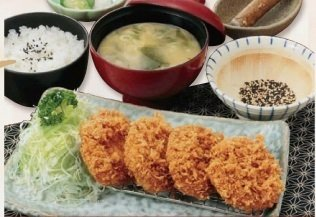
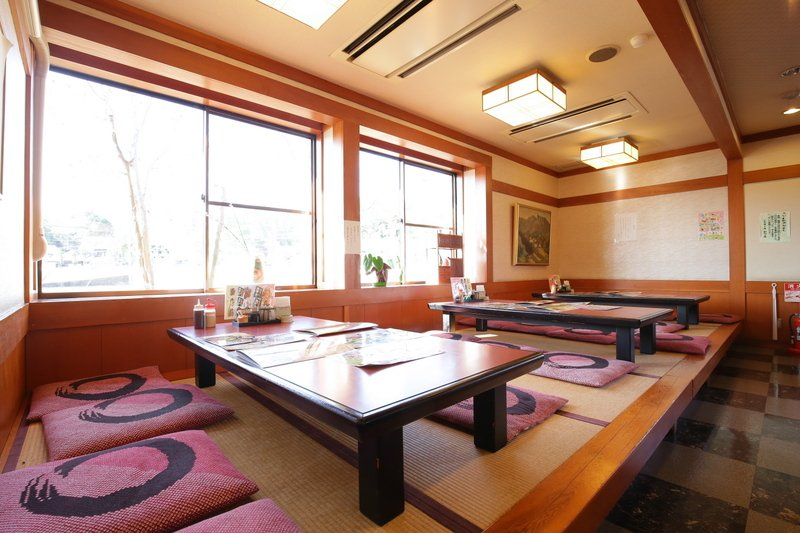
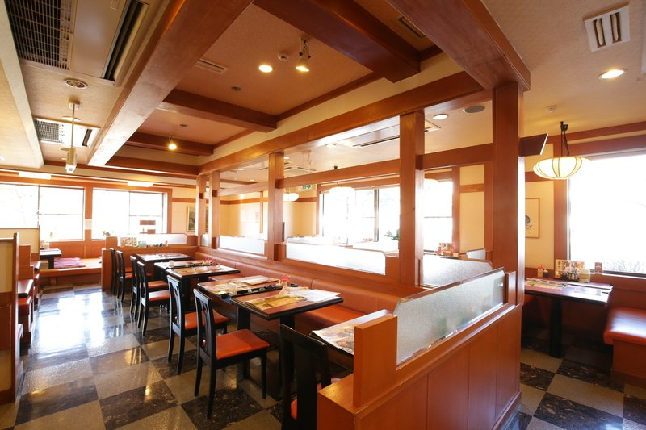
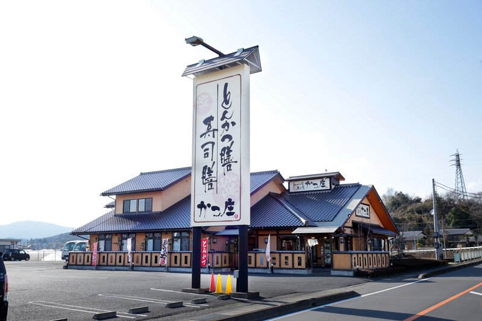
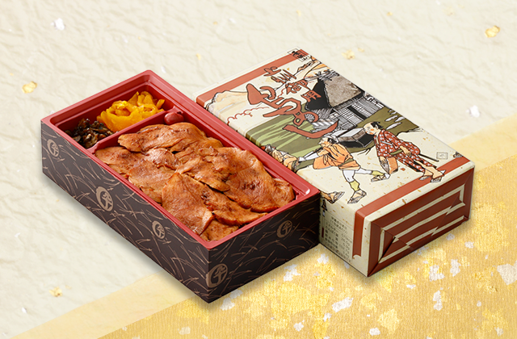
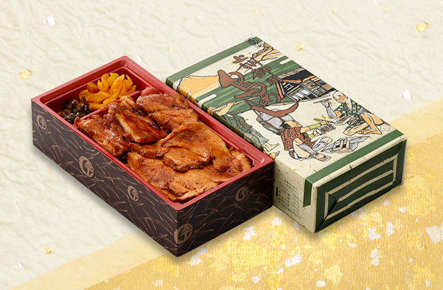
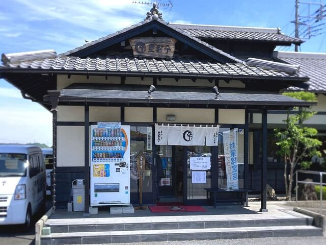
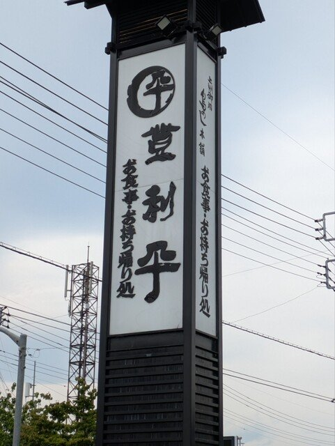

📋今日のサマリー
ハイライト
北軽井沢→下道で群馬サファリへ朝着。エサバスplus 9:50便でホワイトタイガー・ライオン肉やり →「かつ庄でとんかつランチ」→「もみじ平総合公園＋自然史博物館でのびのび遊ぶ」→ 登利平で群馬名物 鳥めし弁当をテイクアウト → 15:30 佐久の妻実家へ移動・夜はテイクアウトで晩御飯。
3歳児OK マイカー 早朝出発（07:30） 下道ルート 所要：約9時間 夜は佐久泊 予約済 15,000円
料金合計（家族3人）
- エサバスplus
＋入園料 - 大人5,500×2＋子供4,000×1（200円OFF適用後）＝ 15,000円（カード決済済）
- 昼食
- 家族で 3,500〜5,500円目安（園外・店による）
- もみじ平／自然史博物館
- もみじ平 無料・自然史博物館 中学生以下無料／大人1,000円（企画展開催中）
- 予想合計
- 約 19,000〜21,000円
※エサバスplusのチケットには入園料が含まれるため、入園料の重複徴収はなし。
予約番号: ****（マイページ参照） ／ 受付番号: ****（Gmail/マイページで確認）
🏠07:30 北軽井沢出発
ルート（下道）
セブンイレブン群馬北軽井沢店（吾妻郡長野原町大字北軽井沢1988-78）→ R146 → R145（八ッ場・長野原方面）→ R353 → R254 → 群馬サファリパーク
- 距離
- 約 50〜55km（下道のみ）
- 所要
- 約1時間50分〜2時間10分（朝の下道、信号少なめだがカーブ多）
- 到着目標
- 09:30（バス集合は 9:40・出発 9:50）
- 休憩
- 道の駅八ッ場ふるさと館（R145沿い、北軽井沢から約30分）でトイレ＋子供のリフレッシュ
- 注意点
- R146の朝は通勤車で詰まる場合あり／R353〜R254 はカーブ多く車酔いに注意
🦒09:30 群馬サファリパーク 到着


← スワイプ／PCは左右矢印ボタン or キーで写真切替 →
09:30第1駐車場 到着
- 住所
- 群馬県富岡市岡本1番地
- 営業
- 9:30〜17:00（入園受付〜16:00）／水曜定休（5/14は営業）
- 駐車場
- 無料・約1,000台・平日は満車リスク低
- 予約済
- エサバスplus 9:50便（受付番号 ****（Gmail/マイページで確認））
大人2＋子供1 = 15,000円（カード決済済）
到着〜9:40までにやること（時間タイト）
- 駐車（第1駐車場、無料）
- 総合案内所でトイレ・おむつ替え（バス車内トイレなし）
- EチケットQR画面を準備（Gmail or マイページ）
- 直接バス乗り場へ移動
「車で周れるので大きな動物園より歩き疲れず、子どもも最後まで元気。ライオンが近く、歩きゾーンの餌やりも楽しめた」
— いこーよ
🚌09:50 エサバスplus（メインイベント）


← スワイプ／PCは左右矢印ボタン or キーで写真切替 →
09:50〜11:30所要1時間40分
- 予約済
- 受付番号 ****（Gmail/マイページで確認） / 大人2＋子供1 / 15,000円
- 集合
- 9:40までにバス乗り場へ直接
- 定員
- 最大23名（席数限定）
- 体験内容
- サファリゾーンで草食動物へのエサやり＋ウォーキングサファリでライオン・ホワイトタイガーへの肉やり体験＋専門ガイド付き
- 3歳児
- 子ども料金で乗車可
- ベビーカー
- バスには持ち込み不可。下車時預け
- Eチケット
- 「利用開始」ボタンは係員が押す（自分で押すと無効）
「エサバスplusはライオンとの距離が非常に近く、ガイドの話も上手。笑いと学びがあり、満足度が高い」
— 体験ブログ
「3歳の子もエサやりバスで草食動物やライオンに餌をあげる時に大興奮。最高の笑顔が見られた」
— コズレ
🍴12:00 お昼（かつ庄）
12:00〜13:00とんかつ膳・寿司膳 かつ庄
座敷・個室・キッズルームあり、駐車場50台・席数130 の家族向け大箱。サファリから車約12分（6.7km）、もみじ平へ車約6分（3.5km）。3歳児用に お子様カレー680円／お子様うどん380円／お子様寿司780円。




← スワイプ／PCは左右矢印ボタン or キーで写真切替 →
- 住所
- 群馬県富岡市富岡2394-1
- 昼営業
- 11:00〜15:00（LO 14:30）／無休
- 席数
- 130席（座敷・個室・キッズルームあり）
- 駐車場
- 50台
- サファリから
- 車 約12分・6.7km
- もみじ平から
- 車 約6分・3.5km
大人向けメニュー（昼）
お子様メニュー
「寿司もうどんもトンカツも食べたい欲望を叶える店」
— 食べログ
「座敷でヒレかつ定食、家族でゆったり過ごせた」
— ぐんラボ
混雑時の控え海山亭いっちょう 富岡店
富岡市曽木231-2／530席・個室・座敷あり・駐車場66台。お子様ランチセット 858円、握り3貫天ぷら御膳 1,298円。サファリから車14分・もみじ平から9分。無休。0274-64-9978
🛝13:30 もみじ平総合公園（メイン）


← スワイプ／PCは左右矢印ボタン or キーで写真切替 →
13:30〜15:30もみじ平総合公園
- 住所
- 群馬県富岡市黒岩周辺
- 料金
- 無料
- 遊具
- 2024年度リニューアル・3〜6歳向け複合遊具・1〜3歳柵付きエリア・長いローラーすべり台
- 水遊び
- 例年は夏休み期間中限定／5/14は未開放見込み（公式で開設期間要確認）
- 設備
- 授乳室・おむつ替えシート・子ども便座あり
- サファリから
- 車約14分（7.9km）
「広い芝生や長い斜面のすべり台が子どものお気に入り。自然史博物館と組み合わせて使いやすい」
— コモリブ


← スワイプ／PCは左右矢印ボタン or キーで写真切替 →
隣接群馬県立自然史博物館
- 住所
- 富岡市上黒岩1674-1
- 営業
- 9:30〜17:00（最終16:30）／月休（5/14木OK）
- 料金
- 大人 510円
※企画展開催中（〜5/24）は一般1,000円
中学生以下無料 - 展示
- 動く実物大ティラノサウルス・恐竜全身骨格・地球史
- 立地
- もみじ平総合公園に隣接（徒歩可）
「3歳と7歳の子が動くティラノサウルスに釘付け。恐竜だけでなく家の中の生き物展示まで印象に残る」
— いこーよ
🥡15:10 登利平 富岡店（夕飯テイクアウト）
もみじ平退出 → 佐久へ向かう前に、群馬名物「上州御用 鳥めし」を テイクアウトして佐久の妻実家で晩御飯にする。店内飲食LOは14:30で過ぎているので、テイクアウト窓口を利用（LO 19:30まで）。




← スワイプ／PCは左右矢印ボタン or キーで写真切替 →
- 住所
- 群馬県富岡市別保20-2
- テイクアウト
- 10:00〜20:00（LO 19:30）
- もみじ平から
- 車 約8分
- 滞在目安
- 10〜15分（事前電話で受取り時間を伝えれば短縮可）
お持ち帰りメニュー（看板）
🏠15:30 妻の実家（佐久）へ
登利平で鳥めし弁当を受け取ったら出発 → 富岡バイパス／国道254号 → 下仁田 → 内山峠（トンネル）→ 佐久。下道のみで約 1時間8分・49.9km。妻の実家（ブルーマリンスポーツクラブ佐久店の近く）に到着・宿泊。テイクアウトした鳥めし弁当で晩御飯。
- 距離
- 約 49.9km（下道のみ）
- 所要
- 約 1時間8分（Google Maps「すぐ出発」基準）
- 主な経由
- もみじ平公園通り → 富岡バイパス／R254 → 下仁田街道 → 内山峠 → 佐久
- 到着目安
- 16:45 前後（出発が15:30の場合）
- 目印
- ブルーマリンスポーツクラブ佐久店 / 〒385-0041 長野県佐久市鍛冶屋465
- 内山峠（トンネル）はカーブ・勾配が増える → 車酔いしやすい子は下仁田側で休憩してから峠に入る
- 夕方は下仁田〜佐久が暗くなり始める。ヘッドライト早めに点灯
- 子供が寝ていたら無理に起こさない
途中の休憩スポット
- 道の駅しもにた（甘楽郡下仁田町馬山3766-11 / 峠区間の前の最有力休憩）— 🗺 Map / 公式
- セブン-イレブン 下仁田インター店（短時間休憩・峠前の補給）
- 道の駅ヘルシーテラス佐久南（佐久市伴野7-1 / トイレ24h・授乳室・ベビーシートあり）— 🗺 Map / 公式